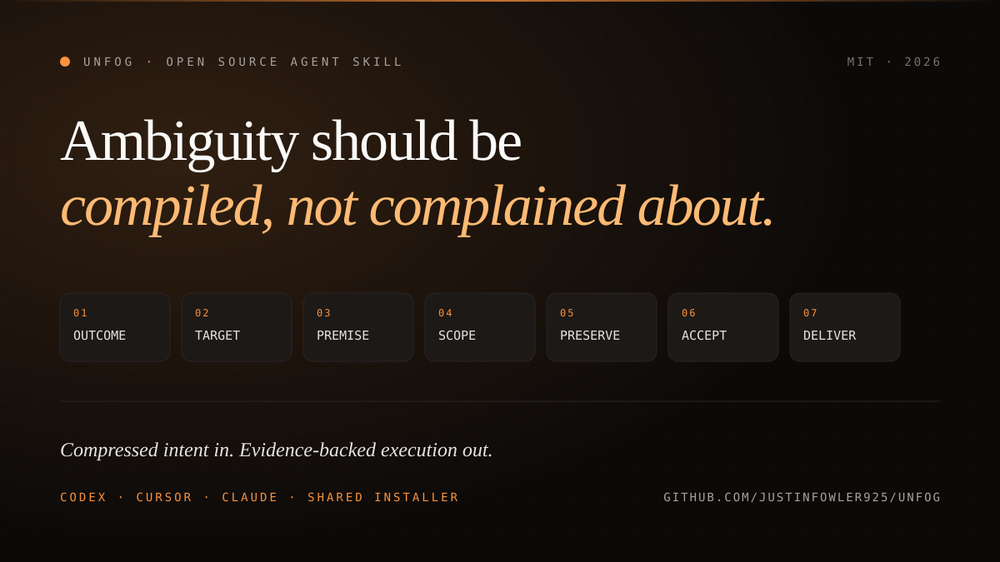

Outcome
What someone will actually observe.
Most of my best instructions to an AI coding agent are objectively terrible specs. The missing detail should be recovered from evidence—not pushed back onto the human as requirements theater.

Most of my best instructions to an AI coding agent are objectively terrible specs.
Those requests work for a human collaborator who already understands the environment, the goal, and the standard of proof. They fail with many agents because the missing detail gets handled in one of two bad ways: the agent starts an interview, or it silently guesses.
So I built Unfog, an open-source Agent Skill that turns underspecified requests into evidence-backed execution contracts—and then carries them through completion.
Unfog is not a spec generator. It does not respond to every short prompt with a twelve-section requirements document. The contract is primarily an internal control for the agent. Before changing anything, it resolves seven things:
What someone will actually observe.
The real environment, artifact, and running identity that produce that outcome.
Whether the factual claim behind the request is even true.
The concrete population that shares the reported defect or direction.
What must not change.
Observable pass/fail probes, including a control.
The full chain required to finish: edit, test, merge, deploy, and verify.
Unfog asks only when the unresolved choice would materially change the user-visible behavior, target, data policy, security policy, or scope. Everything else should be discovered from the system or handled with the least-expanding reversible interpretation.
That changes the collaboration model. The human can speak in compressed intent. The agent is responsible for recovering the execution contract from evidence—not for making the human perform requirements theater.
It also changes what “done” means. A passing test, green deployment, or HTTP 200 is not automatically a completion receipt. Unfog requires evidence from the layer the user actually experiences, a non-zero denominator, and a receipt for every acceptance probe.
The skill works with Codex, Cursor, and Claude, using the same Agent Skills package and shared installer. It supports automatic invocation for vague, non-trivial work, or explicit use with $unfog.
For long-running or risky work, the repository includes a deterministic JSON contract validator. It rejects unresolved material forks, zero-item checks, missing user-observable probes, missing controls, and completion claims without receipts.
Unfog’s source, installer, execution-contract schema, fixtures, and tests are public. Read the implementation, install the same package across your agents, or fork it for your own operating rules.